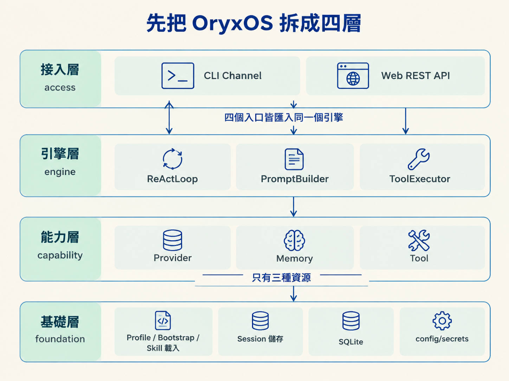
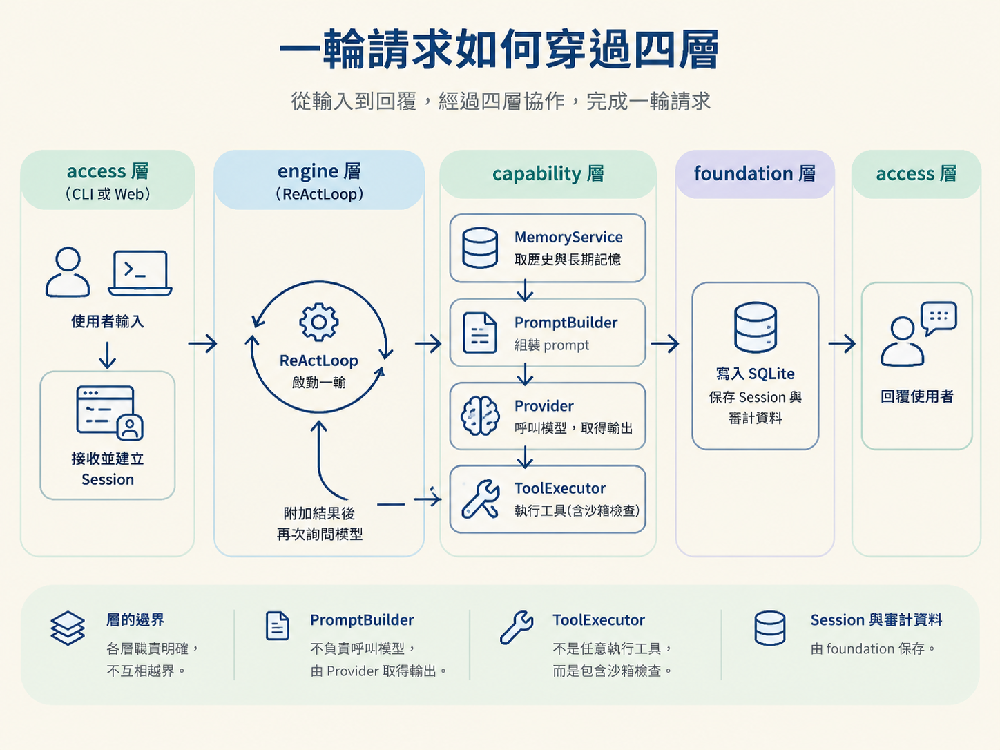

一個 Agent 要真的工作，光有模型還不夠：它得知道要去哪裡接收請求、如何組織上下文、怎麼呼叫工具，以及執行結果要存在哪裡。OryxOS 用四層架構把這些責任分開，再讓 Provider、Memory、Tool 三種能力供養 ReAct 引擎，最後透過 CLI 與 Web Service 把能力交給外部使用。
看完這篇，你應該能畫出 access／engine／capability／foundation 四層，並說明五大能力各自如何支援 ReAct 引擎，以及引擎如何透過不同入口對外提供服務。
前面的七個決策回答了「要選哪條路」，現在要回答的是：「整個系統怎麼站起來？」
OryxOS 是一個單體（monolith）的 Spring Boot 應用。它不是拆成多個微服務，而是由一個程式、單一執行環境承載四個分工清楚的層。每一層只處理自己的責任，並透過介面和其他層溝通。
| 層 | 放什麼 | 一句話角色 |
|---|---|---|
| access（接入層） | CLI Channel、Web REST API | 外界從哪裡進來 |
| engine（引擎層） | ReActLoop、PromptBuilder、ToolExecutor | Agent 怎麼想與動 |
| capability（能力層） | Provider、Memory、Tool | 引擎能用的三種資源 |
| foundation（基礎層） | Profile／Bootstrap／Skill 載入、Session 儲存、SQLite、config/secrets | 一切運轉的地基 |
這裡有兩個容易混淆、但很重要的切分。
第一，access 有兩個入口：CLI 與 Web。它們的接收方式不同，卻會把請求交給同一個引擎。這表示新增另一個入口時，不需要重寫 Agent 的思考流程。
第二，capability 只有三種資源：Provider、Memory、Tool。ReAct 不在這一層，因為 ReAct 不是被動提供給引擎使用的資源，而是負責使用這些資源的引擎本身。

需求文件列出的五大能力是 Provider、ReAct、Memory、Tool、Web Service。到了技術方案裡，它們的關係更像一條有方向的生產線，而不是五個並排的盒子：
Provider、Memory、Tool 供養 ReAct 引擎；ReAct 再透過 CLI 與 Web Service 對外提供能力。
這個方向性很重要。少了 Provider，Agent 沒有腦；少了 Memory，每輪都像失憶，只能重新理解上下文；少了 Tool，它就只能描述「應該做什麼」，卻無法真的動手。ReAct 的價值，正是把這三種資源組成一個能反覆判斷、行動、再判斷的迴圈。
把一次對話攤開來看，就能看出每一層為什麼存在。接入層負責把請求送進來，引擎層負責安排流程，能力層提供可使用的資源，基礎層則讓狀態與資料能留下來。
使用者輸入
→ [access] CLI 或 Web 收到請求，建立 Session
→ [engine] ReActLoop 啟動一輪
→ [capability] MemoryService 給歷史與長期記憶
→ [engine] PromptBuilder 組裝 prompt
→ [capability] Provider 呼叫模型
→ [capability] ToolExecutor 執行工具（含沙箱檢查）
→ [engine] 把結果附加回上下文，再問一次模型
→ [foundation] Session、審計表寫入 SQLite
→ [access] 回覆使用者這段流程也說明了各層的邊界。PromptBuilder 不負責呼叫模型，模型呼叫交給 Provider；ToolExecutor 也不是任意執行工具，而是包含沙箱檢查；Session 與審計資料則交給 foundation 保存。

邊界切清楚之後，擴展會集中在邊緣。例如新增企業 IM 渠道，只需要增加一個 access 層的 adapter，讓它呼叫既有的 Agent API，不必改動 ReAct 引擎或能力層。
看到「作業系統」這個名稱，很容易先想到微服務。但 OryxOS 在核心階段刻意採用單體：一個 JAR、一個行程，內部再用四層維持分工。
原因很實際。微服務會額外帶來網路通訊、服務協調與部署管理的複雜度；而核心階段最重要的是讓引擎以最短路徑正確跑起來。此時把系統分散出去，增加的是運轉成本，不是 Agent 的核心能力。
單體也不代表所有程式碼都混在一起。四層之間靠介面隔開，讓單體保有清楚的接縫。未來要拆出模組、增加渠道或加入工具時，可以沿著這些接縫調整，而不必先拆掉整個系統。
最後可以用一句話檢查這個架構是否成立：請求能從 access 進入，經過 engine 使用 capability，並由 foundation 留住必要狀態，最後再回到 access。只要這條路真的能跑通，四層架構就不只是分類表，而是 OryxOS 實際工作的骨架。